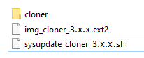

Le “Cloner” est utilisé pour faire une copie de sauvegarde d'une application et éventuellement l'utiliser pour mettre à jour d'autres appareils (du même modèle).
Procédure de SAUVEGARDE (BACKUP):
Copier les fichiers img_cloner_3.x.x.ext2 et sysupdate_cloner_3.x.x.sh dans le dossier principal d'une clé USB (format FAT32 partition unique - ms-dos MBR).
Attention: N'utilisez pas le navigateur “Edge” car il modifie l'extension du fichier.
Attention: Il ne doit pas y avoir d'autres fichiers de mise à jour: sysupdate_…
Éteignez l'appareil.
Insérez la clé USB (si l'appareil est équipé d'un micro-USB, utilisez un adaptateur micro-USB (Type A) → USB).
Allumez l'appareil.
Appuyez sur le bouton “BACKUP”.
Écrivez le nom souhaité et appuyez sur 
Le processus de backup est terminé lorsque vous lisez “Operation ‘Local file system’ completed.”
Éteignez l'appareil.
Retirez la clé USB.
Un dossier “cloner” sera créé sur la clé USB où vous trouverez une copie de BACKUP.
Procédure d’INSTALLATION (INSTALL):
Copiez dans le dossier principal d'une clé USB (format FAT32 partition unique - ms-dos MBR):
les fichiers img_cloner_3.x.x.ext2 et sysupdate_cloner_3.x.x.sh.
Attention: N'utilisez pas le navigateur “Edge” car il modifie l'extension du fichier.
le dossier “cloner”.
Attention: A l’intérieur du dossier “cloner” ”, il doit y avoir un dossier avec le nom de la “backup” qui a été fait dans la procédure de BACKUP. Dans ce dossier, il doit y avoir le fichier “localfs.tar”.


Vérifiez qu'il n'y a pas d'autres fichiers de mise à jour: sysupdate_…
Éteignez l'appareil.
Insérez la clé USB (si l'appareil est équipé d'un micro-USB, utilisez un adaptateur micro-USB (Type A) → USB).
Allumez l'appareil.
Sélectionnez la version que vous souhaitez installer dans le menu déroulant.
Appuyez sur le bouton “INSTALL”.
Le processus d’INSTALLATION est terminé lorsque vous lisez “Operation ‘Local file system’ completed.”
Éteignez l'appareil.
Retirez la clé USB.